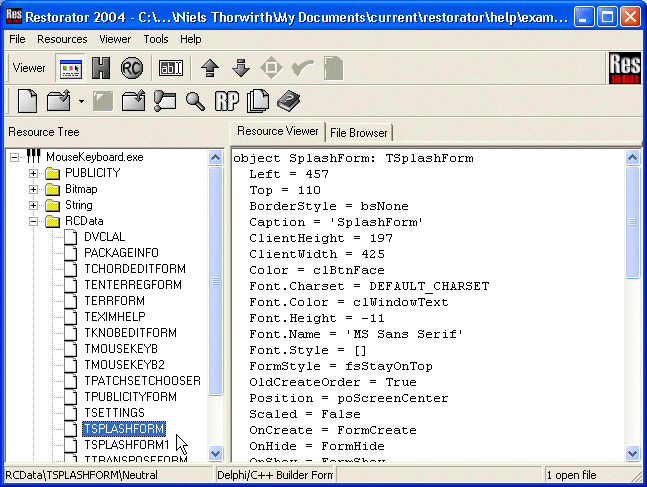
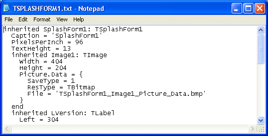

Restorator
|
| Note: the screenshots in this tutorial originate from an older version of Restorator. |
This tutorial shows how to change properties of Delphi programs. Properties contain a lot of parameters of the visual user interface. This also includes many text messages and the menu ! As demonstration, we use Bome's Mouse Keyboard [online]. A bome.com application that allows playing a piano on the screen.
1. About Delphi programs
Borland's Delphi is a development tool with which it is made very easy to create powerful applications. Restorator is created with Delphi. However, Delphi does not follow the Windows resource standards. Instead, Delphi creates a predefined resource type called RCData for each window of the program. This resource contains all information of that window, e.g. its size, contained controls and included images.
2. Looking at the splash window
Open MouseKeyboard.exe in examples and have a look at the resource RCData- TSPLASHFORM1.
|  |
This is the window that appears when you start the application or when you select in the help menu "About". In the Resource Viewer, you can already see the window definition !
Now save it to disk (e.g. by dragging and dropping like in the previous tutorials). The window description is saved as a txt file. All included images and binary data of Delphi windows are stored in separate files. In this case, one separate file will be created: "TSplashForm1_Image1_Picture_Data.bmp".
Open the text file with a text editor. You'll see a line where this image is referenced:

You can change any items in the txt file, but you should be
careful, changing too much will result in a non-working application
when saving...
You can also change the image to create your own keyboard version. Do that like in Tutorial 2. However, don't assign the image, that will be explained in the next step.
3. Assigning the modified files
With other resources, there was just one file to modify and assign. Here you have 2 of them (the txt and the bmp). As the txt file contains a reference to the bmp image, you always use the txt file to assign a Delphi window.
Meanwhile you should know how to assign resource files, e.g. drag'n'drop TSplashForm1.txt on the respective resource item. When Restorator didn't report an error, just save MouseKeyboard.exe as MouseKeyboard1.exe...and there you go ! It's as simple as that !
Look also through the other resources. If you come up with a funky version, we send you a MouseKeyboard registration.
{kind=link}